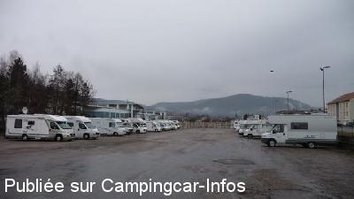
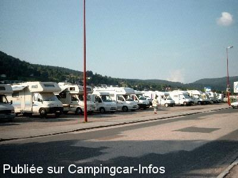
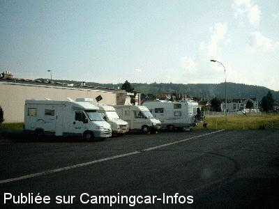

APCC = parkings réservés camping-cars sans services de :
GÉRARDMER
(N° 629)
Accès/adresse :
Boulevard d'Alsace
88400 GÉRARDMER
88400 GÉRARDMER
Latitude : (Nord) 48.07197° Décimaux ou 48° 4′ 19′′
Longitude : (Est) 6.87347° Décimaux ou 6° 52′ 24′′
Tarif : 2015
Stationnement : 5,60 €
Paiement par horodateur
Services :
A côté du magasin d'usine Linvosges
Tous commerces.
Autres informations :
Ouvert toute l'année
50 emplacements bitumés en pente
Tel + 33 (0)329 606 060
http://www.gerardmer.net/carte-arrets-navette-des-neiges_francais.php

Le 21/03/2011 par fabricelig

Le 27/05/2004 par ECOUTE

Le 12/06/2003 par LOBRY
de
avho67
le 25/10/2015 :
L'aire est idéalement située au centre de Gérardmer a l'arrière de l'office du tourisme, très proche du lac, des commerces et des restaurants. La borne de vidange Flot bleu payante en sus se situe à 200 m à l'extérieur. Des toilettes publiques gratuites sont disponibles à l'entrée de l'aire. Certes le parking nécessiterait une rénovation du revêtement avec marquage et embellissement, mais l'endroit reste agréable et très pratique pour visiter la ville et son lac.
L'aire est idéalement située au centre de Gérardmer a l'arrière de l'office du tourisme, très proche du lac, des commerces et des restaurants. La borne de vidange Flot bleu payante en sus se situe à 200 m à l'extérieur. Des toilettes publiques gratuites sont disponibles à l'entrée de l'aire. Certes le parking nécessiterait une rénovation du revêtement avec marquage et embellissement, mais l'endroit reste agréable et très pratique pour visiter la ville et son lac.
de
le glaude
le 20/08/2015 :
il me semble que la commune nous prend pour des vaches a lait 5,60e c'est exagéré pour l'état du parking j'y suis passé en juillet l'herbe n'était pas coupée des nid de poules en pagaille pas d'éclairage même le jour du feu d'artifice je pense que l'on sert a financer les canons a neige qui vont être installés au dessus beaucoup de communes plus petites font mieux
il me semble que la commune nous prend pour des vaches a lait 5,60e c'est exagéré pour l'état du parking j'y suis passé en juillet l'herbe n'était pas coupée des nid de poules en pagaille pas d'éclairage même le jour du feu d'artifice je pense que l'on sert a financer les canons a neige qui vont être installés au dessus beaucoup de communes plus petites font mieux
de
Th Hancart
le 29/06/2015 :
§Sommes passés ce 24/06/2015. Le tarif 2015 est passé à 5,60€.
§Sommes passés ce 24/06/2015. Le tarif 2015 est passé à 5,60€.
de
Ours_et_fan
le 02/03/2015 :
Bonjour,
Passé une nuit sur l'aire (en voisin). Rien à ajouter à ce qui est dit si ce n'est qu'il y a une navette gratuite toutes les 20 minutes pour monter à la station de la Mauselaine en saison. Voir là: http://www.gerardmer.net/carte-arrets-navette-des-neiges_francais.php
Bonjour,
Passé une nuit sur l'aire (en voisin). Rien à ajouter à ce qui est dit si ce n'est qu'il y a une navette gratuite toutes les 20 minutes pour monter à la station de la Mauselaine en saison. Voir là: http://www.gerardmer.net/carte-arrets-navette-des-neiges_francais.php
de
LINE
le 10/06/2012 :
§
une nuite sur laire de gerardmer c est comme sur laire dautoroute je suis partie au camping du lac xonrupt pour 8 50E LA NUIT
§
une nuite sur laire de gerardmer c est comme sur laire dautoroute je suis partie au camping du lac xonrupt pour 8 50E LA NUIT
de
harel
le 18/05/2012 :
de passage a geradmer au mois de mai aire tres bien situé avec tout a proximité marché le samedi a proximité du centre é du lac merci a la ville d accuellir les campig carist
de passage a geradmer au mois de mai aire tres bien situé avec tout a proximité marché le samedi a proximité du centre é du lac merci a la ville d accuellir les campig carist
de
fabrice Ligny
le 21/03/2011 :
Nous avons passé une nuit en février. Grande aire. Rien à dire. Proche des commerces, d'une bonne boulangerie pour le matin. Et concernant la borne, en effet, en sale état. Quand j'y suis passé, elle n fonctionnait pas.
Nous avons passé une nuit en février. Grande aire. Rien à dire. Proche des commerces, d'une bonne boulangerie pour le matin. Et concernant la borne, en effet, en sale état. Quand j'y suis passé, elle n fonctionnait pas.
de
veillon-bury
le 08/06/2009 :
Grand parking payant pour le stationnement, La borne, de l'autre côté de la route, ne semble pas pratique, mais services gratuits. Aire située juste à côté du magasin d'usine et à proximité de tous les commerces.
Grand parking payant pour le stationnement, La borne, de l'autre côté de la route, ne semble pas pratique, mais services gratuits. Aire située juste à côté du magasin d'usine et à proximité de tous les commerces.
de
jlch 57
le 06/04/2009 :
Aire située derrière l'office de tourisme au centre ville, La ville mérite le déplacement, le tour du lac également. Merci à la municipalité.
Aire située derrière l'office de tourisme au centre ville, La ville mérite le déplacement, le tour du lac également. Merci à la municipalité.
de
Carpentier Martine
le 19/08/2008 :
Bonjour. Profitant d'un passage à Gérardmer, nous sommes allés voir cette aire. Je la conseille, elle est proche du centre ville et de nombreux camping-cars y sont installés. Elle mérite un arrêt si on veut visiter la ville, très jolie, de Gérardmer.
Bonjour. Profitant d'un passage à Gérardmer, nous sommes allés voir cette aire. Je la conseille, elle est proche du centre ville et de nombreux camping-cars y sont installés. Elle mérite un arrêt si on veut visiter la ville, très jolie, de Gérardmer.
de
Fabipat
le 07/02/2008 :
Aire maintenant payante , services gratuits situés à 100 m de l'autre côté de la route. Pas trop bruyante la nuit, malgré la proximité de la route très fréquentée le jour. Des WC publics gratuits sont à disposition.
Aire maintenant payante , services gratuits situés à 100 m de l'autre côté de la route. Pas trop bruyante la nuit, malgré la proximité de la route très fréquentée le jour. Des WC publics gratuits sont à disposition.
de
galak
le 06/11/2007 :
Aire très bien située par rapport au centre ville et au lac (pas trop loin du casino pour les joueurs). L'aire est à côté d'une route pas trop passagère, à mon avis, mais c'est le prix à payer pour être près du centre.
NB: nous avons été voir l'aire de la Mauselaine qui est éloignée des commerces et du centre mais qui à l'air idéale pour le ski.
Aire très bien située par rapport au centre ville et au lac (pas trop loin du casino pour les joueurs). L'aire est à côté d'une route pas trop passagère, à mon avis, mais c'est le prix à payer pour être près du centre.
NB: nous avons été voir l'aire de la Mauselaine qui est éloignée des commerces et du centre mais qui à l'air idéale pour le ski.